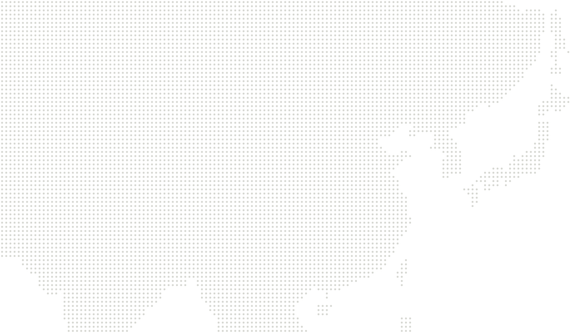
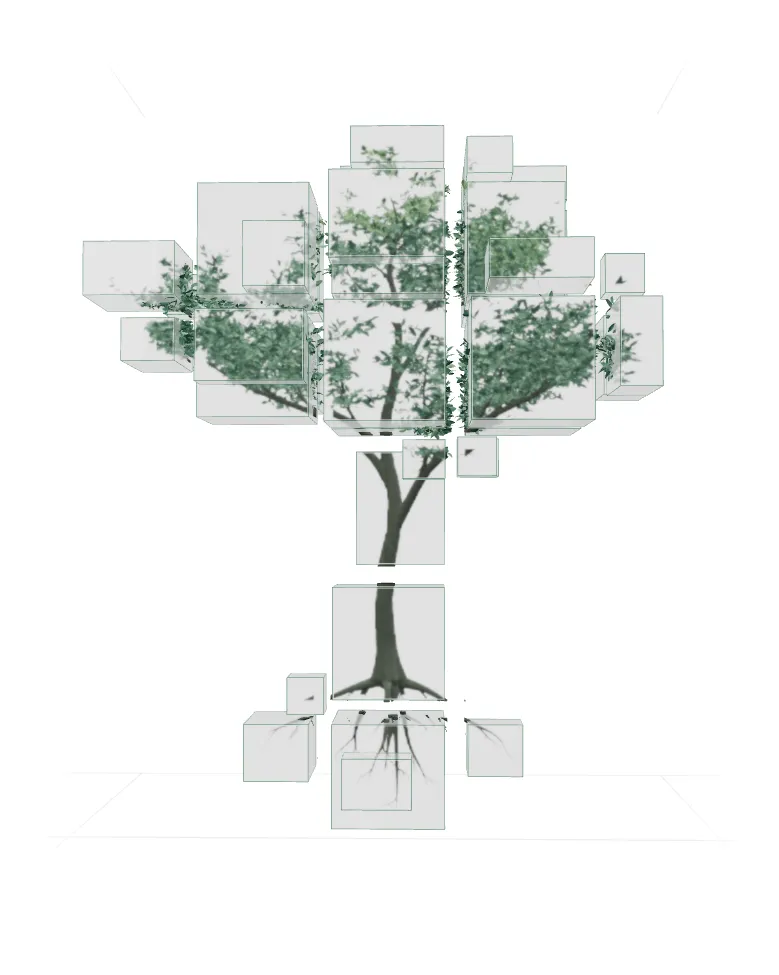

01 / ABOUT ME
自我介绍
从建筑走向科技行业的探索者
重庆大学建筑学硕士在读，拥有一年以上产品实习经验，参与 AI 产品迭代与广告商业化。从数据分析、Prompt 设计到评测验证，把跨专业观察转化为产品实践。
ARCHITECTURE × AI↗
从建筑设计出发，走向科技行业。
我关心人如何表达需要，也关心技术如何真正回应。
保持好奇。
观察，动手，再验证。A WORK IN GROWTH
从甘肃到重庆，再到深圳与北京。
空间在变化，我把观察带进新的问题里。
自我介绍
重庆大学建筑学硕士在读，拥有一年以上产品实习经验，参与 AI 产品迭代与广告商业化。从数据分析、Prompt 设计到评测验证，把跨专业观察转化为产品实践。

甘肃 / 家乡从这里出发，带着对人与环境的好奇。
我的技能
围绕任务目标，拆解生成链路，迭代提示词与交互。
校园，建立观察的方法。实习，面对真实的问题。再把想法做成工具，继续探索。

枝干记录经历，嫩梢指向未来。选择两侧的一段经历，打开阅读。
我的兴趣，落在连接发生的地方。
从数字空间到真实环境，从单个智能到协作。
关于产品、技术，或者一个新想法。
点击邮箱，即可复制。